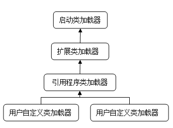

在java中，通过一个类的全限定名来获取描述此类的二进制字节流是放到Java虚拟机外部实现的，实现这个动作的代码模块称为“类加载器”。
类与类加载器
类加载器虽然只用于实现类的加载动作，但在Java程序中的作用却不限于类加载阶段。对于任意一个类，都需要由加载它的类加载器和这个类本身一同确立其在Java虚拟机中的唯一性，每一个类加载器，都拥有一个独立的类名称空间。在比较两个类是否“相等”时，只有在这两个类是由同一个类加载器加载的前提下才有意义，否则，即使这两个类来源于同一个Class文件，被同一个虚拟机加载，只要加载它们的类加载器不同，那这两个类就必定不相等；
类的相等，指的是代表类的Class对象的equals()方法，isAssignableForm()方法，isInstance()方法返回结果一致，也包括使用instanceof关键字做对象所属关系判定等情况。
public class ClassLoadTest {
public static void main(String[] args) throws ClassNotFoundException, IllegalAccessException, InstantiationException {
ClassLoader myLoader = new ClassLoader() {
@Override
public Class loadClass(String name) throws ClassNotFoundException {
try{
String fileName = name.substring(name.lastIndexOf(".") + 1) + ".class";
InputStream is = getClass().getResourceAsStream(fileName);
if(is == null){
return super.loadClass(name);
}
byte[] b = new byte[is.available()];
is.read(b);
return defineClass(name, b, 0, b.length);
}catch (IOException e){
throw new ClassNotFoundException(name);
}
}
};
Object obj = myLoader.loadClass("org.ting.jvm.Child").newInstance();
System.out.println(obj.getClass());
System.out.println(obj instanceof org.ting.jvm.Child);
}
}
上述代码构造了一个加单的类加载器，其加载了与自己同一路径下的Class文件，Child的class文件，并实例化了这个类的对象。输出:
class org.ting.jvm.Child false
从输出结果来看，这对象确实是org.ting.jvm.Child类实例化出来的对象，但是这个对象与类org.ting.jvm.Child类做所属类型检查的时候返回了false，这是因为在jvm中存在两个Child类，一个是由系统应用程序类加载器加载的，另一个是由自定义的类加载器加载的，虽然是同一个class文件，但是是两个独立的类，因为做对象从属类型检查时返回false;
双亲委派模型
对于jvm来说，存在着两种不同的类加载器：
1）启动类加载器（Bootstrap ClassLoader），这个加载器是虚拟机的一部分；
2）其它的类加载器，这些类加载器由Java语言实现，独立于虚拟机外部，并且全部都继承自抽象类java.lang.ClassLoader。
系统提供的类加载器有以下三种：
1）启动类加载器Bootstrap ClassLoader，这个类加载器负责将存放在JAVAHOME/lib目录中，或者被-Xbootclasspath参数所自定的路径中的类库文件加载到虚拟机中；启动类加载器无法被Java程序直接引用，如果需要把加载请求委派给启动类加载器，直接使用null代替。
2）扩展类加载器
负责加载JAVAHOME/ext目录中或者被java.ext.dirs系统变量所制定的路径中的所有类库；
3）应用程序类加载器
该加载器由sun.miss.Launcher$AppClassLoader实现，是CLassLoader中的getSystemClassLoader()方法的返回值，一般也被称作系统类加载器。负责加载用户类路径classPath上所指定的类库，可以直接使用这个类加载器。
如果有必要，可以定义自己的类加载器。
类加载器之间的关系一般如下图所示：

上图所示的类加载器之间的层次关系，称为类加载器的双亲委派模型，该模型要求除了顶层的启动类加载器外，其余的类加载器都应当有自己的父类加载器。这里类加载器之间的父子关系一般不会以集成的关系实现，而是都是用组合关系来复用父加载器的代码。
双亲委派模型的工作过程是：
如果一个类加载器收到了类加载的请求，它首先不会自己去尝试加载这个类，而是把这个请求委派给父类加载器去完成，每一个层次的类加载器都是如此，因此所有的加载请求最终都应该传送到顶层的启动类加载器中，只有当父加载器反馈自己无法完成这个加载请求时，子加载器才会尝试自己去加载。
使用双亲委派模型来组织类加载器之间的关系，其好处在于Java类随着它的加载器一起具备了一种带有优先级的层次关系。对于java系统中的类例如java.lang.Object，无论哪一个类加载器要加载这个类，最终都是委派给处于模型最顶端的启动类加载器进行加载，因此Object类在程序的各种类加载器环境中都是同一个类，即使编写一个java.lang.Object类，它也永远不会被加载。如果没有双亲委派模型的机制，Object类在程序中就变得混乱了。
双亲委派模型的实现非常简单，在java.lang.ClassLoader的loadClass()方法中，先检查是否已经被加载过，若没有加载则调用父加载器的loadClass()方法，若父加载器为空，则默认使用启动类加载器作为父加载器，如果父类加载失败，则抛出ClassNotFoundException异常，再调用自己的findClass()方法进行加载。